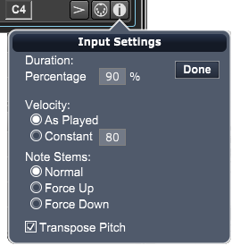

To open the Step Input options click on the Inspector icon at the bottom right of Note Palette.

Duration Area
The duration is the length of the note you step enter.
The duration is different from the size; the duration is the length of the note, and the size is the amount of time the counter advances each step. The space between notes is called the gap. Duration + Gap = Size.
Percent. Select this duration mode to have Overture calculate a note duration as a percentage of the step size.
Set the percentage by entering it in the Percentage Amount field.
Velocity Area
Velocity is the parameter that defines how hard you struck a note.
You can select one of two possible velocity modes.
- As Played. Select this velocity mode to insert notes at exactly the velocity you play them.
- Constant. Select this velocity mode to insert notes of a set velocity, regardless of the actual velocity you play.
Set the desired constant velocity value by entering it into the Constant Velocity field.
Note Stems
- Force Stems Up. When you select this option, Overture makes the stems of any step-entered notes point upward, regardless of staff position. Select this option to enable it (put a check beside it); select it again to disable it.
- Force Stems Down. When you select this option, Overture makes the stems of any step-entered notes point downward, regardless of staff position. Select this option to enable it (put a check beside it); select it again to disable it.
- Force Accidentals to Sharps. When you select this option, Overture notates any accidentals as sharps, regardless of the key. Select this option to enable it (put a check beside it); select it again to disable it.
- Force Accidentals to Flats. When you select this option, Overture notates any accidentals as flats, regardless of the key. Select this option to enable it (put a check beside it); select it again to disable it.
The Step Input options contains four different areas, though not all areas are available at all times. These areas are:
- Type area. Use this top portion of the window to define the type of symbol you want to input and any related options. This area also contains a counter, showing exact metrical location and pitch.
- Size area. Use this portion of the window to set the amount of time the counter advances each time you play a note. Size appears as both an actual note value and as a number of units (480 units = one quarter note).
- Duration area. Use this portion of the window to set the actual duration of the MIDI note you enter. This area is not available if you’re entering chord names.
- Velocity area. Use this portion of the window to set the actual velocity of the MIDI note you will enter. This area is not available if you’re entering chord names.
Transpose Pitch
When you select this option, Overture transposes pitchees using the tracks' transposition settings. See the Track Inspector panel for transposition settings.
The following sections discuss each area in detail.
Type Area
Use this area to define the type of symbol you want to input, to set options related to that symbol, and to view pitch and meter placement of any step-entered data.
The Type area contains four elements:
- Input Select button
- Options pop-up menu
- Counter
- Pitch indicator
We discuss each element in one of the following sections.
Input Select button
Press and hold the mouse on this button to open the Input Select pop-up menu.
Select the type of symbol you want to step-enter from the Step Input pop-up menu. Overture lets you step-enter five types of music symbols: notes, rests, slashes, rhythmic slashes, and chord names.
Options pop-up menu
Move the cursor over the Options button, then press and hold the mouse to open the Options pop-up menu.
Use the pop-up Options menu to select various step-entry notation options:
- Force Stems Up. When you select this option, Overture makes the stems of any step-entered notes point upward, regardless of staff position. Select this option to enable it (put a check beside it); select it again to disable it.
- Force Stems Down. When you select this option, Overture makes the stems of any step-entered notes point downward, regardless of staff position. Select this option to enable it (put a check beside it); select it again to disable it.
- Force Accidentals to Sharps. When you select this option, Overture notates any accidentals as sharps, regardless of the key. Select this option to enable it (put a check beside it); select it again to disable it.
- Force Accidentals to Flats. When you select this option, Overture notates any accidentals as flats, regardless of the key. Select this option to enable it (put a check beside it); select it again to disable it.
- Tie Previous Two Notes. This is actually a command, not an option. When you choose this command, Overture automatically ties together the two notes immediately to the left of the input point. This command allows you to step-enter tied notes easily.
- Duplicate Previous. This command is enabled only when you are step-entering slashes. Use it to copy the previous measure's slash pattern into the active measure.
- Duplicate Previous to End. This command is enabled only when you are step-entering slashes. Use it to copy the previous measure's slash pattern into all remaining measures in the score.
- Don't Transpose Pitch. When you select this option, notes played on your MIDI keyboard will be entered as non-transposed notes on your score. Otherwise they will be transposed using the tracks' transposition settings (in Setup Track dialog) if the Score is in Transposed mode.
Counter
The Counter displays (in bars, beats and units) the location of the step you're about to enter.
The bar number displays the measure number containing the insertion point. The beat number displays how many beats the insertion point is into the measure. The unit number displays how many units the insertion point is into the beat. Overture records and plays notes with a resolution of 480 units per quarter note, so an eighth note would equal 240 units; a sixteenth note would equal 120 units, and so on.
The counter display shown above indicates that the cursor is at 8 · 2 · 240. This means the insertion point is in the eighth measure and midway through the second beat.
Pitch Indicator
The Pitch Indicator displays, as a MIDI note number, the pitch of the note you’re about to enter. MIDI supports 128 notes ranging from C2 to G8 with Middle C = C3.
Size Area
This area sets the amount of time the counter advances each time you play a note. Overture displays the step size as both a note value and as an exact number of units (480 units = one quarter note).
There are several ways to set the size:
- Method 1: Select a size from the Note Size pop-up menu.
- Method 2: Use the units numerical to enter a new step size.
- If you enter a value in the units field that is not an equal subdivision of the beat, the Note Size button shows a “>” or “<” symbol along with the current note size.
- Method 3: Use the computer keyboard to set step size.
As shown in the table below, you can type keys on your computer keyboard to set the step size.
Key
|
Function
|
1
|
Set value to whole note/rest
|
2
|
Set value to half note/rest
|
4
|
Set value to quarter note/rest
|
8
|
Set value to eighth note/rest
|
6
|
Set value to sixteenth note/rest
|
5
|
Set value to thirty-second note/rest
|
3
|
Turn triplets on or off
|
.
|
Turn the dot on or off
|
Tuplet Check box
You can also define the size as a tuplet by clicking the Tuplet check box. This lets you create complex timing divisions, like five notes in the space of one quarter note.
Use the mouse or keyboard to set tuplet fields. Overture automatically calculates the units and updates the note size pop-up.